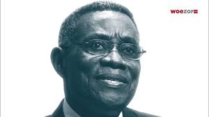
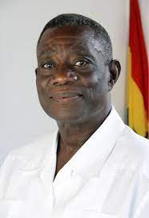
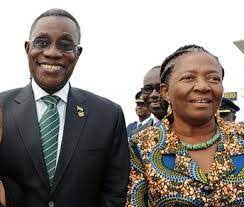
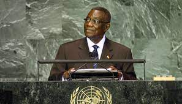
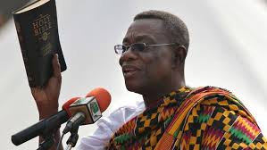

Professor John Evans Fiifi Atta Mills was born on July 21st, 1944, at Tarkwa in the Western Region of Ghana and hails from Ekumfi Otuam in the Mfantsiman East Constituency of the Central Region.
EDUCATION
He launched a lifelong interest in acquiring knowledge at Achimota Secondary School, where he obtained his General Certificate of Education (GCE) Advanced Level in 1963.To further his education, he attended the University of Ghana, Legon, where he received a Bachelor's Degree and professional certificate in Law (1967). While earning a Ph.D. in Law from the prestigious School of Oriental and African Studies (SOAS) in London, John Evans Atta Mills was selected as a Fulbright scholar at the equally prestigious Stanford Law School in the United States of America. At age 27, he was awarded his Ph.D. after successfully defending his doctoral thesis in the area of taxation and economic development.
FAMILY

Professor Mills was married to Ernestina Naadu Mills (née Botchway) is a Ghanaian educator and the recipient of a Humanitarian award from the Health Legend Foundation. He was blessed wiyh an only son called Sam Kofi Atta Mills.
WORK LIFE
His contribution to intellectual development is remarkable having served on numerous boards and committees. During the almost 30 years of teaching and researching Prof. Mills served as a visiting lecturer and professor at a number of educational institutions worldwide and presented research papers at symposiums and conferences throughout the world.
POLITICS
John Evans Atta Mills is the only person who has run for President on the ticket of the National Democratic Congress (NDC) three consecutive times in the history of the Party.He won the Presidency on the third attempt in the 2008 general elections (December 7th & 28th,2008 and January 2nd, 2009 -28th December 2008 and January 2nd, 2009 elections were Presidential run-offs) Publications Professor Mills who campaigned on "CHANGE" during the 2008 elections has more than,Professor John Evans Fiifi Atta Mills, the Presidential Candidate of the National Democratic Congress (NDC) for the 2008 General Elections, is a man of high integrity, humble, a liberal-minded person who consults and peace is his watch-word.Previously he was Vice-President from 1997 to 2001 under President Jerry Rawlings, and he stood unsuccessfully in the 2000 and 2004 presidential elections as the candidate of the National Democratic Congress (NDC).He is the first Ghanaian head of state to die in office.He is known in Ghana as "Asomdweehene" which literally means the "King of Peace". He is an academician, sportsman, and astute politician.